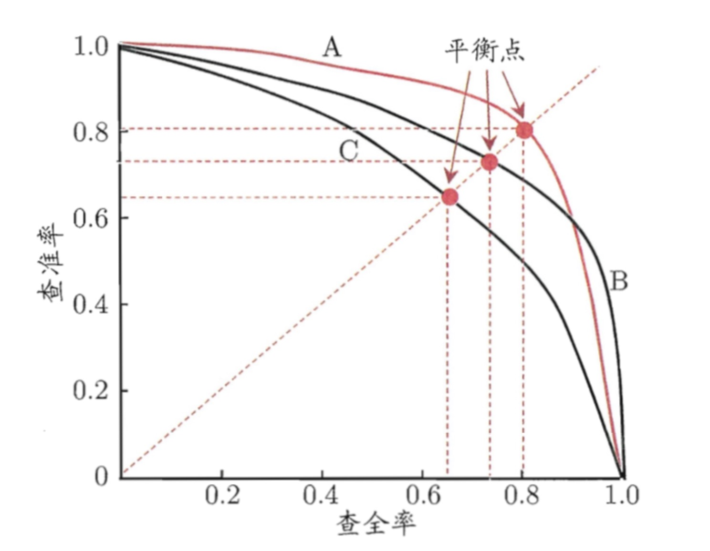

基本术语
机器学习：利用经验、通过计算、构建模型，来改善系统自身的性能。
属性（特征）：描述事物在特定方面的性质的事项。
属性值：属性上的取值。
属性空间（输入空间）：由属性张成的空间，属性空间。
记录（样本）：一个具体事物的属性描述，由属性向量表示。
第个记录的属性向量
标记：描述事物某个特性的事项。
标记值：标记上的取值。
标记空间（输出空间）：所有标记的集合，标记空间。
样例：拥有了对应标记的记录，由（记录，标记）对表示。第$j$个样例
数据集：
记录的集合（无监督），$D=\{\mathbf{x}_1,\mathbf{x}_2,\dots,\mathbf{x}_N\}$；
样例的集合（有监督），$D=\{\left(\mathbf{x}_1,y_1\right),\left(\mathbf{x}_2,y_2\right),\dots,\left(\mathbf{x}_N,y_N\right)\}$。
回归：有监督学习中，标记为连续值，$\mathcal{Y}=\mathbb{R}$。
分类：有监督学习中，标记为离散值。其中$|\mathcal{Y}|=2,\mathcal{Y}=\{0,1\}$或$\mathcal{Y}=\{+1,-1\}$为二分类；$|\mathcal{Y}|>2,\mathcal{Y}=\{c_1,c_2,\dots,c_n\}$，为多分类。
训练数据集：用以训练模型的数据集的子集，$D_{training} \subseteq D$。
测试数据集：应用测试模型的数据集的子集，$D_{testing} \subseteq D$。
假设空间与参数空间
决策函数（非概率模型）：从输入空间$\mathcal{X}$到输出空间$\mathcal{Y}$的映射$f:\mathcal{X}\to\mathcal{Y}$。
假设空间$\mathcal{F}$定义为决策函数的集合
其中，$\mathbf{X}$是定义在输入空间$\mathcal{X}$上的变量，$\mathbf{X}\in\mathcal{X}$;$Y$是定义在输出空间$\mathcal{Y}$上的变量。
假设空间$\mathcal{F}$通常是由一个参数向量决定的函数族
其中，参数向量$\mathbf{w}$取值于$n$维向量空间$\mathbb{R}^{n}$，称为参数空间。
假设空间$\mathcal{F}$也可定义为条件概率的集合（概率模型）
其中，$\mathbf{X}$是定义在输入空间$\mathcal{X}$上的随机变量，$Y$是定义在输出空间$\mathcal{Y}$上的随机变量。
假设空间$\mathcal{F}$通常是由一个参数向量决定的概率分布族
其中，参数向量$\mathbf{w}$取值于$n$维向量空间$\mathbb{R}^{n}$，称为参数空间。
模型策略
损失函数（代价函数）度量模型预测错误的程度，是预测输出$f\left(\mathbf{X}\right)$和实际输出$Y$的非负实值函数，记作$L \left(Y, f \left( \mathbf{X} \right) \right)$。
0-1损失函数
其中，$I\left(\cdot\right)$是指示函数。
平方损失函数
绝对值损失函数
对数似然损失函数
经验风险（经验损失）是模型$f\left(\mathbf{X}\right)$关于训练数据集
的平均损失
经验风险最小化
其中，$\mathcal{F}$是假设空间。
过拟合：学习时选择的模型所包含的参数过多，以至于出现对已知数据预测得很好，但对未知数据预测得很差的现象。
欠拟合：学习时选择的模型所包含的参数过少，以至于出现不能对数据预测很好的现象。
泛化能力：学习得到的模型对未知数据的预测能力。
结构风险：在经验风险上增加表示模型复杂度的正则化项。
其中，$J \left(f\right)$是模型复杂度，是正则化项，是定义在假设空间$\mathcal{F}$上的泛函；$\lambda \geq 0$是系数，用以权衡风险和模型复杂度。
结构风险最小化
其中，$\mathcal{F}$是假设空间。
正则化项可以是参数向量的$L_{2}$范数
其中，$|\mathbf{w}|$表示参数向量$\mathbf{w}$的$L_{2}$范数。
正则化项可以是参数向量的$L_{1}$范数
其中，$|\mathbf{w}|_{1}$表示参数向量$\mathbf{w}$的$L_{1}$范数。
优化算法
机器学习的训练过程就是使用训练数据集$D$，按照学习准则在假设空间$\mathcal{F}$中寻找最优模型$f^*$的最优化求解过程
或者在参数空间中寻找最优参数的最优化求解过程
梯度下降法：通过迭代的方法来计算训练集$D$上的风险函数最小值
其中，$\mathbf{w}_t$为第$t$次迭代的参数值，$\alpha$为学习率。
性能度量与评估方法
训练误差：模型$Y = \hat f \left(X\right)$关于训练数据集的平均损失
其中，$N$是训练样本容量。
测试误差：模型$Y = \hat f \left(X\right)$关于测试数据集的平均损失
其中，$N’$是测试样本容量。
当损失函数是0-1损失，测试误差即测试集上的误差率
其中，$I$是指示函数，即$y \neq \hat f \left( \mathbf{x} \right)$时为1，否则为0。
测试集上的准确率
则，$r_{test} + e_{test} = 1 $。
分类中，模型的预测结果可分为：
- 真正例（True Positive，TP）：将正类预测为正类；
- 假负类（False Negative，FN）：将正类预测为负类；
- 假正类（False Positive，FP）：将负类预测为正类；
- 真负类（True Negative，TN）：将负类预测为负类。
精确率（查准率）召回率（查全率）
P-R曲线：根据模型的预测结果对记录进行排序，按此顺序逐个对记录作为正样本进行预测，计算出当前查全率、查准率。在以查全率为横坐标，查准率为纵坐标的坐标系中，绘制各点并连接成线。
平衡点：模型在“查准率=查全率”时的取值。
模型比较：平衡点大的模型性能优于平衡点小的模型。

$F_{1}$值是精确率和召回率的调和均值
真正率
假正率
ROC曲线：根据模型的预测结果对记录进行排序，按此顺序逐个对记录作为正样本进行预测，计算出当前真正率、假正率。在以假正率为横坐标，真正率为纵坐标的坐标系中，绘制各点并连接成线。
AUC：坐标系中ROC曲线下覆盖面积。
模型比较：模型ROC曲线有交叉时，AUC大的模型性能优于AUC小的模型。
留出法：将数据集$D$划分为两个互斥的集合，其中一个集合作为训练集，另一个作为测试集。在训练集上训练模型，在测试集上测试误差，作为对泛华能力的评估。
k折交叉验证：将数据集$D$划分为$k$个大小相似的互斥子集，即$D=D_1\cup D_2\cup\dots\cup D_k$，$D_i\cap D_j=\emptyset \left(i\neq j\right)$。每次用$k-1$个子集的并集作为训练集，余下的子集作为测试集。可得到$k$组训练集、测试集。最终返回的是$k$个测试结果的均值。